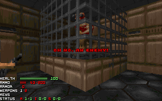
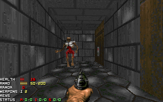

Random Thing Spawner
Random Thing Spawner
No doubt you've seen SMMUTEST.WAD and its random monster generator (screenshot). In this tutorial, we'll make a monster generator as well - but we'll also have a random health spawner to keep the player alive.

As is standard, I've provided a base environment for you to use here. It is simply a 384x128 room, centered around (0,0), with two switches with specials 274 (SR script trigger). The left switch has a tag number (bit #9) of 80, while the right has a tag number of 81. Grab a can of Dr. Pepper, cause this tutorial is a doozy.
First, we need to understand how to randomize a number. You may know of the rnd() command, which picks a random number from 1 to 100. Don't worry, you don't need to tell FS what monster to spawn for each of the 100 numbers. Instead, we can use the ever-so-useful modulus operator. The modulus operator is represented by a percentage sign, %. Think of modulus as division, except instead of having the amount it can go in as your output, the remainder is your output. For example, 4 % 2 = 0, 4 % 3 = 1, 10 % 6 = 4, 10 % 3 = 1, etc.
Ever wondered what was the point of variables in FS? Here's your answer. You'll have to define only two variables to do this, both integers (int): i, and enemytype. Why don't we have to define 'healthtype'? You'll see that when we get there.
First, we'll section off the scripts and add the two different scripts. Since this is going to be a large script file, I won't type all of the script each time we add something. Another thing you need to do is make the script use things.h, which is done with the include() function. We'll set up our scripts first:
[scripts]
include("things.h");
script 80
{
int i, enemytype;
}
script 81
{
int i;
}
You may be asking why we have to define 'i' twice. Well, in this example, 'i' is a local variable, meaning that it is only used in the script it is defined in. We could make it a global variable, but I'm guessing your head would snap from all this new stuff. :)
Because it is the simplier one (even though it has more variables), we'll work with the enemy spawning first. To spawn an enemy randomly, you need a random number. This is where the rnd() and modulus operator come in. We want to spawn one of five monsters, so we'll do a rnd() modulus five.
script 80
{
int i, enemytype;
i = rnd() % 5;
}
rnd() % 5 will give us an output of either 0, 1, 2, 3, or 4. Not five, as you can't have a remainder of five when
you divide by five. Now, we'll assign each possible output to a monster.
i = rnd() % 5;
if(i==0) enemytype = BARONOFHELL;
if(i==1) enemytype = CACODEMON;
if(i==2) enemytype = ARACHNOTRON;
if(i==3) enemytype = REVENANT;
if(i==4) enemytype = PAINELEMENTAL;
Important - There is a big difference between the operators '==' and '='. '==' compares two values, while '=' sets two values equal to each other. For example, i = 0 is setting i equal to zero, while i == 0 is checking whether i is equal to zero or not.
When writing your own scripts, you may not be sure what a thing is called. Is it Spiderlord or Spidermastermind? Supercharge or soulsphere? All those questions can be answered in THINGS.H (the file we included), which is available in SMMU.WAD or here.
We know what enemy we want to have the player face now, but there's a slight problem - how do we get it on the map? Assuming you're using the test environment, we know the coordinates for our enemy are (-128, 0). Looking at fsfuncs.txt, or the complete function list, you'll see a command called 'spawn'. This is what we want to use. Spawn is in the format: spawn(object, x-coordinate, y-coordinate). For our object, we will use 'enemytype', as that is our variable which we have already defined the monster as.
...
if(i==4) enemytype = PAINELEMENTAL;
spawn(enemytype, -128, 0);
Simple is that. Now trying out our map, we should see the ugly visage of a monster whenever we press that switch.

Oy, poor marine... guess we should work on that health dispenser now, huh?